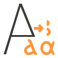
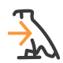

Egyptological Unicode Converter
The Egyptological Unicode Converter is a Microsoft Word add-in that converts text in beta code to proper Egyptological, Hieroglyphic, Coptic, and Greek Unicode characters.
How to use
- In Word, select some text written in Egyptological, Hieroglyphic, Coptic, or Greek beta code.
- Choose either the
Transcription,
 Hieroglyphs (ltr),
Hieroglyphs (rtl),
Coptic, or
 Greek
Greek
IPA
button in the ribbon in order to convert the beta code into the proper Unicode characters.
The same options are also available in the context menu that opens with a right-click on the text selection.
Note that a font covering the required Unicode characters must be installed for the characters to be displayed correctly.
For example, if your input is
sXA
and you choose the
button,
sXA will be replaced by sẖꜣ.
Special rules for Egyptological Transcription
- The beta code system follows MdC (Manuel de Codage), but includes some special rules.
- Use an exclamation mark to avoid replacement:
e.g. a! → a, while a → ꜥ
- Use an asterix to choose allographs of ỉ ṯ d ḏ:
i* and I* → ꞽ and Ꞽ instead of ỉ and Ỉ
T* → č instead of ṯ
d* → ṭ instead of d
D* → č̣ instead of ḏ
- Use the plus sign to make a character uppercase:
e.g. X+ → H̱, while X → ẖ
Special rules for Hieroglyphs
- The beta code system works by the Gardiner numbers, the Egyptian Hieroglyphs Unicode characters, and
the Egyptian Hieroglyph Format Controls Unicode characters (only the first 9).
- For the latter, the following substitutes may be used:
: → vertical joiner
* → horizontal joiner
◰, °| → insert at top start
◱, .| → insert at bottom start
◳, |° → insert at top end
◲, |. → insert at bottom end
+ → overlay middle
( → begin segment
) → end segment
- Character positioning is achieved by the use of ADVANCE fields. They can be adjusted
manually by pressing ALT+F9, changing the numbers (\u: up, \d: down, \l: left, \r: right) and pressing ALT+F9 again.
If the display is incorrect, it may be necessary to reset the font and font size for the hieroglyphic text before applying the format controls.
- The format controls are retained as hidden text.
Special rules for Coptic
- Use the plus sign to make a character uppercase:
e.g. D+ → Ϫ
Special rules for Greek
- Greek diacritics are indicated by:
• spiritus lenis: )
• spiritus asper: (
• acute: /
• gravis: \
• circumflex: =
• trema: +
• iota subscriptum: |
Special rules for IPA (International Phonetic Alphabet)
- The beta code system follows X-SAMPA (Extended Speech Assessment Methods Phonetic Alphabet).
Character Mapping
Hieroglyphs
Gardiner numbers are mapped to Egyptian Hieroglyphs Unicode characters.
Search Hieroglyphs by phonetic value or Gardiner number here:
Egyptological transcription
| from | to | | from | to |
| A | ꜣ | | x | ḫ |
| ' | ʾ | | V | h̭ |
| # | a | | X | ẖ |
| i | ỉ | | s | s |
| j | i̯ | | $ | ś |
| i: | ï | | S | š |
| a | ꜥ | | q | ḳ |
| w | w | | k | k |
| b | b | | g | g |
| p | p | | t | t |
| f | f | | v | ṱ |
| m | m | | T | ṯ |
| n | n | | d | d |
| r | r | | D | ḏ |
| l | l | | = | ⸗ |
| h | h | | & | ⸢ |
| H | ḥ | | \\ | ⸣ |
Coptic
| from | to | | from | to |
| a | ⲁ | | t | ⲧ |
| b | ⲃ | | y | ⲩ |
| g | ⲅ | | F | ⲫ |
| d | ⲇ | | x | ⲭ |
| e | ⲉ | | Y | ⲯ |
| Z | ⲋ | | w | ⲱ |
| z | ⲍ | | W | ϣ |
| h | ⲏ | | f | ϥ |
| j | ⲑ | | H | ϩ |
| i | ⲓ | | $ | ⳉ |
| k | ⲕ | | q | ϧ |
| l | ⲗ | | D | ϫ |
| m | ⲙ | | K | ϭ |
| n | ⲛ | | T | ϯ |
| X | ⲝ | | _ | ̅ |
| o | ⲟ | | = | ⸗ |
| p | ⲡ | | & | ⸢ |
| r | ⲣ | | \ | ⸣ |
| s | ⲥ |
Greek
| from | to | | from | to |
| a | α | | p | π |
| b | β | | r | ρ |
| g | γ | | s | σ |
| d | δ | | j | ς |
| e | ε | | c | ϲ |
| z | ζ | | t | τ |
| h | η | | u | υ |
| q | θ | | f | φ |
| i | ι | | x | χ |
| I | Ι | | y | ψ |
| k | κ | | w | ω |
| l | λ | | W* | Ꞷ |
| m | μ | | : | · |
| n | ν | | ; | · |
| c | ξ | | ? | ; |
| o | ο |
IPA
| from | to | | from | to |
| B | β | | E | ɛ |
| v\ | ʋ | | O | ɔ |
| T | θ | | _h | ʰ |
| S | ʃ | | _j | ʲ |
| J\ | ɟ | | _w | ʷ |
| G | ɣ | | _> | ʼ (ejective) |
| R\ | ʀ | | _^ | ̯ (syllabic) |
| R | ʁ | | _= | ̩ (syllabic) |
| R | ʁ | | _" | ̈ (trema) |
| X\ | ħ | | _. | ̣ (emphatic) |
| ?\ | ʕ | | __ | ̄ (macron) |
| ? | ʔ | | " | ˈ (stress) |
| @ | ə | | 0 | ∅ |